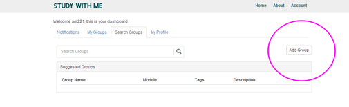

In order to increase the Chinese University and British University exchange and service to students during their studies to the creativity to their own learning knowledge to practice, so the establishment of the Sino British Joint Laboratory, the Sino British Joint Laboratory is China Zhengzhou University of Light Industry Institute of international education, and University of Napier in the United Kingdom for the joint experimental project to solve, for students to organize the activities, classes and learn the convenient for the development and application of a kind of application software. Have web pages and Android mobile client.
The mobile client can register as a user, landing, user schedule query, query in an empty classroom, activities initiated by the user, cancel, update, comments on the activities, to the group of add, modify, and delete. Web version can be the exchange between the group and create, user registration, landing, user activity initiated, canceled, update. Comments on the activities, the group's increase, and delete.
Web version of the browser with the input link into the site. And press the following to carry out the operation of the registration, the group launched, etc.. The client can also register with the user. The client can user schedule inquiry, activities initiated, empty classroom inquiry. Users can create groups of users during the launch of the empty classroom search activity, the group's choice, the group's cancellation. Course table query. The creation of the curriculum, the addition of the curriculum. Cancellation of course. The inquiry of the empty classroom is empty, the time of the classroom is the time to inquire..
1 Net log in URL: input in the site URL: http://web.atux.co.uk/ jump to the user log in registration interface.
2 user registration. Such as (1) user selection for registration. How the user can log in directly to the Account (2) of which. Direct login. (2) Account is a drop down box.. There are direct login registration.
Function:
(1).Home is not registered before the home page is shown, after the registration of their own management interface.
(2) about: it is the website's simple self introduction.
(3) Account; including two individual options is a down menu: which includes two interface login and exit.
(4) Up Sing is a registered website for a new user.
Note: 1 users registered password can not be less than six characters. 2 when the user registration will receive a mail, this email must be activated to log in. 3 when the user registration successfully, enter the home page of their own.
The main interface including: message notification, my group, search group, my personal information.
(1)the notice of the notice is primarily a message for the members of the group..
(2) my panel is divided into creating groups and joining groups. Can create group, cancel or join group.
(3)the search team is to find the existing group and choose to join the group.
(4)personal information: the main personal information editor, personal information including name, password, email, about himself.
4 my team: my group is divided into three parts: an increase in group, team management, team members and the team to cancel the panel show.
(1)the creation of a group: as shown below
Create groups, create the conditions for the creation of the group's name, group, group courses, group section category. There are two forms of the group, whether private and open, group join personnel.
(2) a good team can be created to communicate with members within the group..
Click Meeting Add we can launch activities for the group to launch: for example
Including: the name of the meeting, the meeting time, the meeting time, the meeting date, the classroom reservation. The important information must be entered or displayed in red.
(3) the recovery of the closure of the panel can be carried out by the group. Click the quick recovery team to resume the group.
(4) the query group: the query team can also create a group.
（5） personal information: Click Edit, you can modify their personal information.
（6）Finally, click Account, eject out log user exit.